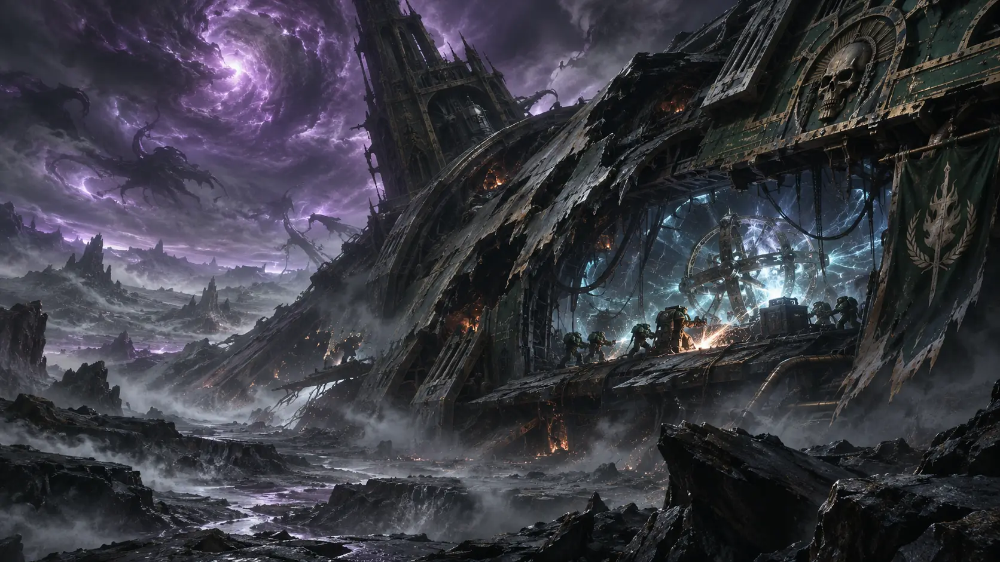
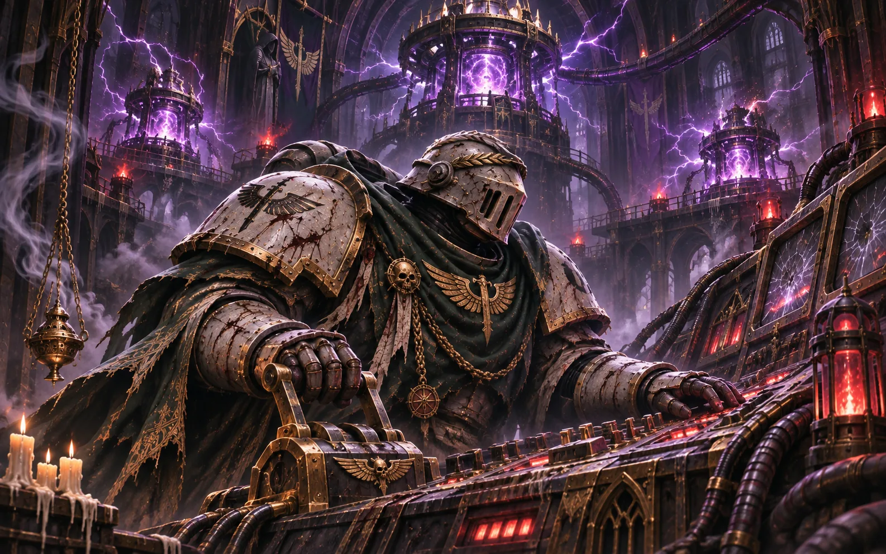
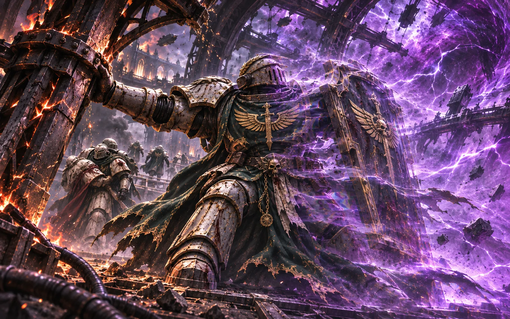
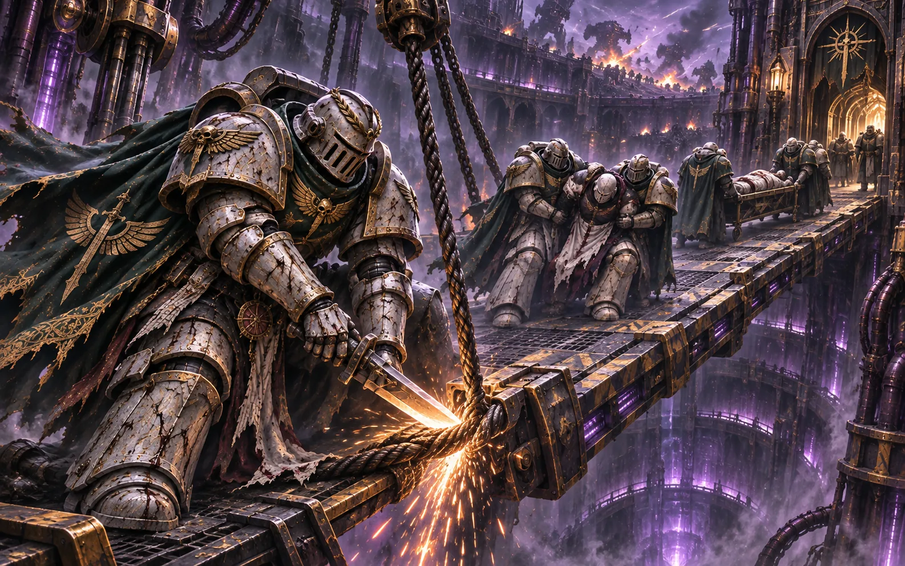

V3.7 原文档案 · 按原稿顺序完整收录 · 未删节
V3.7 原文档案 · 按原稿顺序完整收录 · 未删节
五、远征战役记录
〔损坏的出征登记板〕
有些远征只剩日期。有些只剩返航人数。最旧的一页上，出征栏填了整整一行名字；归航栏被火烧穿。
1. 沉默远征（约156.M35）

地点： 远东星域，希芙拉上空
一艘机械教探测舰在希芙拉外围被亚空间风暴击伤，迫降在废星地表。舰上载有某种装置，能放大卡利班毁灭时散落在亚空间的灵能碎片信号。当任院长依据初代院长奥兰多·灰烬之眼留下的警戒训令判断：若此装置被回收，可能有人顺着信号找到希芙拉。
突击队在残骸中找到装置时，它已经激活了。舰上机械教成员全部阵亡，残骸周边已被吸引来的亚空间掠食实体盘踞。突击队强行突入，熔毁装置。通讯阵列截获了突击小队最后数秒的频道记录。突击小队的武器开火声依次停止后，频道未归于静默。一个来源不明的信号以深渊脉动的频率折返了突击小队的呼号，持续十一秒后中断。
〔沉默远征·禁用呼号簿〕
试验记录里，阵亡者的呼号被回应过三次。第四次试验的日期栏空白。
2. 第一次三伪星之战（约892.M35）
地点： 远东星域，希芙拉穹顶环区
第三年的夜班结束后，测绘员亚希米恩发现，九颗伪星已经连续三个月没有改变亮度。记录员说它们本来就不会变。亚希米恩翻出旧图，发现每幅图里那三颗星的位置都有细微差异。
第五年，变途者同时攻击三处引力平衡点。亚希米恩把观测仪留给副手，独自前往中央节点。十一小时后，三处压制力场先后熄灭。守卫在残骸里找到他的护目镜，镜片内侧刻着三条并不相交的直线。
第九年，敌军撤走。穹顶无数伪星中，有九颗烧成盲点；其他星点仍在缓慢变换。环区开始重新校准夜间作息。旧渠聚落的孩子仍把那些暗处当作星座，守夜人不再纠正他们。
〔亚希米恩副手的换班簿〕
我曾说他看错了。那是我们最后一次说话。
3. 第二次三伪星之战（约799.M38）
地点： 远东星域，希芙拉地表至穹顶环区
卡利基努斯借第一次入侵留下的寄生网，将污染扩散到九十九颗伪星。最初的警报来自一名负责更换穹顶灯罩的凡人工匠：他发现昨夜刚装好的灯，今天已有旧式修补痕迹。
两个满编战术小队分守采矿竖井和旧水闸。竖井一度被夺回：余火守卫沿检修栈道反击，把敌军从升降笼里逐层逼出；掌旗官将残破的战旗固定在井架高处，断讯的战士依着它收拢。塞巴斯蒂安·寂静之刃留在应急抑制台前，轮流将三个失控节点的读数压回阈值，守了九个小时。最后一次传来的不是命令，只有他念出的刻度。深夜，竖井的回讯停止；水闸小队随后报告弹药耗尽。最后一名传令兵没有要求增援，只请舰上关闭他们所在的通风支路。战后清场确认，两支满编小队全员阵亡。塞巴斯蒂安活了下来，声带却再也无法完整发声。

卡利基努斯亲自进入地底，试图重新控制失控的寄生网。余烬刺客在井架间截住他，三次近战后被迫撤退。敌人穿过传送门时，影像记录了一个古老的测绘暗语：“回声”。
变途者退去，九组数据碎片已外泄。战后，地表重开了一处被封九年的市场；旧渠商人仍在那里卖灯油。新修的水闸没有立碑。
〔水闸守军·最后一份通信〕
闸门已关。别再派人来了。
4. 钢铁风暴（约622.M41）
地点： 远东星域，维洛斯主星区边缘
兽人军阀“碎铁”把废弃巡洋舰的舰桥改成战争堡垒，向帝国哨站推进。死亡守望奉命斩首，隐修会黑剑小队则追索一块刻有第一军团旧徽的记录板。
双方在维修走廊迎面相遇，谁也没有先报番号。上层突然塌落一名兽人爆破手，两支小队同时开火。随后死亡守望向舰桥主控推进，黑剑沿侧翼进入遗物舱。黑剑摧毁了连接推进引擎的燃料总管，兽人的重型炮台随之失去供能。余火守卫在仍有火光的坡道上掩护撤离船完成装载；堡垒的推进引擎终于熄火，四百六十七名守军得以撤离。
黑剑取走记录板。上面残存一段涉及“第三舰队”的古卡利班字句，部分时间栏被磨平。记录板被封入遗嘱圣匣，未向死亡守望移交。
〔哨站防务长官的结案申请〕
请求将本次战役记为胜利。补给舰已经到了。我们还有四百六十七名活人。
5. 无名血泊（约745.M41）
地点： 远东星域，边境世界格伦霍姆
第十七掷弹兵团叛变后，暗黑天使舰队奉命镇压。隐修会的暗夜骑兵先一步抵达，带走了废墟里一具第一军团旧式静滞舱中的遗物。舱门内壁有蚀刻，记录的年份尚未到来。
暗黑天使战术小队抵达时，静滞舱已经空了。他们封锁格伦霍姆，并在周边星域搜查六个月。隐修会没有与之交火，却不得不停止外围伤员转运。第六个月，一艘载着药品的民船因航道关闭被迫返航；舰长在货单上把目的地改成了另一颗殖民星。
〔旧渠医生的日记〕
第三次换药。药箱里只剩给小孩子用的绷带。舰队今天仍没有来。
6. 熔炉止语（约753.M41）
地点： 远东星域边缘，塞壬海星云外围
枢机主教卢修斯·圣言的布道舰队截获一段陌生坐标，循着星语阵列驶向希芙拉。隐修会熔炉祭司以低频干扰覆盖接收频道。卢修斯听了三个小时，将那片持续的空白认作帝皇的启示，命令全舰跪祷。
一名下级教士报告：目标星区已从仪器上消失。卢修斯宣布这是显圣，随即命令返航。舰队没有伤亡。
卢修斯后来在泰拉出版《我亲眼所见的帝皇沉默神迹》。余烬号一名凡人厨师买到了这本书，藏在食堂储物柜里。熔炉祭司发现后拿走了它。几周后，书又回到柜子里，夹着一张纸条：借阅请签名。
〔余烬号舰务登记〕
本月失物：祷书一本。找回。再次遗失。
7. 沉默互证（约757.M41）
地点： 远东星域，阿格里斯裂谷
恶魔王子瓦拉克·缚魂者在裂谷构筑灵能迷宫。灰骑士奉命驱逐，隐修会则因追踪异常召唤信号抵达同一战场。
灰骑士的正面突击受阻。数名失乡骑士从侧翼进入迷宫，却在接近核心时听见狮王的声音，命令他们停手。迟疑的片刻，瓦拉克撕开包围圈，数人当场阵亡。奥瑞克以权杖击碎恶魔的灵能触须，阿历克斯将其压回残破的通路，灰骑士完成放逐。
战后，奥瑞克去见一名幸存的失乡骑士。对方问他，当时是否也听见了那个声音。奥瑞克没有回答，只把骑士遗落在裂谷里的断剑放在桌上。
他收下断剑，第二天要求归队。
8. 黑铁条约（约800.M41）
地点： 远东星域，铁冠废墟带，废弃锻造巢穴“铁喉”
钢铁勇士战争铁匠卡拉恩在铁喉建立信号放大器。伊瑟林率灰烬失乡骑士突入巢穴，六小时后抵达主厅。混沌终结者守住放大器基座，巢穴在交火中开始坍塌。
一名失乡骑士被塌缩力场压碎半身，仍有生命迹象。队伍原本只剩一具可用的运输担架。另一名战士卸下重武器，把枪架拆成第二副担架。敌方战术记录显示，卡拉恩趁混乱脱离了主厅。
伤者被送入希芙拉第八环区的静滞舱Σ-7。数代军械官都在维护预算上保留他的名字。一次短暂唤醒后，他只要求撤掉舱旁的阵亡花环。
〔铁喉缴获的工程纸页〕
放大器尚未完成。试验栏有两种笔迹，后一种字迹无人认领。
9. 灰炉防线（约850.M41）
地点： 远东星域，废星灰炉
“破碎圣言”试图将灰炉的地质稳定器改作亚空间信标。铸造贤者费尔萨姆-9的回收队在着陆时失去运输机；克里格死亡军团守住北侧矿渣地，灰烬遗忘骑士由东侧进入稳定器区。
费尔萨姆-9反转控制矩阵的指向。灰炉地层随后坍塌，信标未能启动。克里格工兵打开一段废弃排水支路，护教军与隐修会残部由此撤离。东侧死亡骑兵的最后一次冲锋未见于机械教公开战报。
费尔萨姆-9幸存；稳定器原件未能回收。灰烬遗忘骑士随后奉命追索一名堕天使，未再归航。
余烬号航海簿只抄录了撤离路线。灰炉北侧阵地的伤亡数目，直到返航后仍未核清。
10. 熵火熔铸（约51.M42）
地点： 远东星域，赫卡同星区深层
黑暗机械教贤者萨拉米斯·熵炎在废弃神殿“熵火”重建卡拉恩未完成的装置。隐修会突击队摧毁铸造骑士，穿过高温熔炉进入主控厅。萨拉米斯试图传送撤离，坐标在干扰中散失，此后下落不明。
侧翼牢笼中关着七名战斗修女，只有一人活着离开。她的声带已经损毁。遗迹铁匠在牢笼名册上找到五名死者的名字，另一栏空着。突击队撤离时，黑暗机械教的引力装置在走廊尽头坍缩。雷金纳德·负井者以战甲和盾挡住断裂的支架，推过最后两名伤员；左半身陷入翻卷的力场。等闸门关闭，他那一侧的护甲时隐时现，再也无法正常拆卸。

薪传议会授予幸存者“碎律修女”的称号。她收下刻有称号的金属片，却拒绝换上隐修会准备的衣袍，也没有宣誓加入隐修会。她在医疗区住了数周，每天把那张空白名册折好放进衣袋。离开前，她要求取回损坏的战甲内衬。看守将它交给她，没有问她将去哪里。后来石廊里的凡人领诵者沿用了“碎律修女”之名；她们的名字记在属民册，而非战斗兄弟名册。
〔熵火神殿·回收清单〕
七张床架。六具遗骸。一个活人。
11. 深渊之井（约75.M42）
地点： 希芙拉，第一至第三环区
休伦·黑心的情报网取得伪星穹顶的能量特征。猩红屠戮战帮的克拉能统领混编突击集群，休伦一方提供舰只、航路与兵力。双方交易的最后一页未能寻回。
邪教徒以尸体填满第一环区的走廊。余火守卫守了近三个钟头，直到地狱兽熔穿最后一道掩体。塞维林·断索带人切开卡死的吊索，把失控升降架压成一座临时伤员桥；等最后一副担架过去，他错过了第二环区的反击集结。风暴骑士在那里传送切入，克拉能带领精锐直取井口。

伊瑟林第一次将他击倒时，敌人的血肉在裂隙中重塑。阿历克斯截断了克拉能向井口的传送，伊瑟林再次出剑。此后再无可信的敌方生命信号。
〔井口当值簿·75.M42〕
第七次读数：停。
井口守卫：仍在。
目标：已终结。
一名幸存者称克拉能在最后一次攻击前问过井底是什么。其他录音中没有这句话。
守军阵亡七十七人，伤者近百。第一环区被毁，伪星穹顶约三分之一碎裂。数条旧渠堵塞，净水阀停用。原本给矿民运菌种的窄轨车改运伤员，守渠人拆下渔船上的滤材，送往临时净水站。外出远征此后数年近乎停顿。
〔第二环区·旗官补录〕
在第一环区失守之后，余火守卫把最后的战旗交给风暴骑士。三日后，旗仍挂在第二闸门上方，旗面有七处新烧痕。守军的伤亡名册写完了，闸门仍由活着的人看守。
〔石廊补录〕
祸临之地旧档中有关克拉能的记录，仍与本次目击报告并列保存。身份比对未结。